ACE
- Farial Sidabutar
- Ikhsan Nuary Panggabean
- Yogi Prasetya
- M. Nurwansyah
Albino
Apa Itu Albino?
- Albino (dari bahasa Latin albus yang berarti putih), disebut juga hypomelanism atau hypomelanosis, adalah salah satu bentuk dari hypopigmentary congenital disorder. Ciri khasnya adalah hilangnya pigmen melanin pada mata, kulit, dan rambut (atau lebih jarang hanya pada mata).
- Albino timbul dari perpaduan gen resesif. Ciri-ciri seorang albino adalah mempunyai kulit dan rambut secara abnormal putih susu atau putih pucat dan memiliki iris merah muda atau biru dengan pupil merah.
Persilangan Albino
Gen albino dikendalikan oleh gen resesif a, sedangkan gen A menentukan sifat kulit normal. Penderita Albino mempunyai genotip aa, sedangkan orang normal mempunyai fenotip AA atau Aa.
Penyebab Albino
Penyebab Albino adalah adanya kelainan genetik. Gen albino menyebabkan tubuh tidak dapat membuat pigmen melanin. Sebagian besar bentuk albino adalah hasil dari kelainan biologi dari gen-gen resesif yang diturunkan dari orang tua, walaupun dalam kasus-kasus albino tertentu jarang yang diturunkan dari ayah/ibu saja, ada mutasi genetik lain yang dikaitkan dengan albino, tetapi semuanya menuju pada perubahan dari produksi melanin dalam tubuh.
Gejala Albino
- Gejala-gejala dari albino terlihat dari warna rambut, kulit, dan mata yang terang (pucat).
- Pada sebagian orang, pigmentasi kulit tetap sama sepanjang hidup mereka. Sementara pada kasus lain, produksi melanin dapat saja dimulai di masa kanak-kanak atau remaja sehingga kulit menjadi tidak terlalu pucat lagi.
- Saat terkena sinar matahari, akan muncul bintik-bintik coklat (gelap) pada kulit albino dengan ukuran yang bervariasi.Kurangnya pigmentasi juga mengubah warna rambut menjadi coklat atau putih.
- Orang yang berasal dari keturunan Afrika atau Asia mungkin memiliki warna rambut yang sedikit berbeda yang bisa berkisar dari kuning ke merah hingga coklat.
- Warna mata orang dengan albinisme mungkin berubah bersamaan dengan usia dan bervariasi dari biru muda sampai coklat.
- Karena tidak adanya pigmen melanin, iris mata cenderung menjadi transparan. Akibatnya, iris tidak mampu memblokir cahaya berlebihan yang memasuki mata.
- Masalah penglihatan seperti astigmatisme (silindris), rabun jauh, dan rabun dekat umum terlihat pada orang yang mengalami segala bentuk albinisme.
- Gejala okular albinisme hanya teramati di mata saja. Dalam kondisi ini, tidak ada perubahan yang teramati pada warna kulit atau rambut.
- Fotofobia, Nistagmus, Strabismus dan kelainan mata lainnya
Masalah Kulit Terkait Dengan Albino
Orang yang mengalami albinisme (albino) mewarisi gen mutasi dari kedua orang tuanya.Orang albino umumnya lebih rentan terkena kanker kulit. Hal ini disebabkan karena kurangnya melanin meningkatkan risiko melanoma saat terkena sinar matahari dalam jangka waktu lama.Kulit penderita albino juga lebih sensitif terhadap sinar matahari. Kulit bisa saja terlihat berbintik gelap saat terpapar matahari. Kulit albino juga cenderung kasar jika terkena sinar UV untuk waktu lama yang berakibat pada penuaan dini sel-sel kulit.
Kelainan Mata Bagi Pada Penderita Albino
- Nystagmus (pergerakan mata yang sangat cepat)
- Strabismus (“crossed eyes” or “lazy eye”)
- kesalahan refraksi seperti miopi, hipertrozi, dan astigmatisma
- Fotofobia (hipersensitivitas terhadap cahaya)
- Hipoplasi foveal (kurang berkembangnya fovea /bagian tengah dari retina)
- Hipoplasi nervus optikus (kurang berkembangnya nervus optikus)
- Abnormal decussation (crossing /dari fiber nervus optikus pada chiasma optikus)
- Ambliopia (penurunan akuisitas dari satu atau kedua mata karena buruknya transmisi ke otak, sering karena kondisi lain seperti strabismus)
Nystagmus
Nystagmus digunakan untuk menyebut gerakan mata yang tidak bisa dikontrol.Kata nystagmus berasal dari bahasa Yunani “nmstagmos” yang menggambarkan gerakan pada orang mabuk.Hampir semua orang yang menderita albinisme mengalami masalah ini sehingga membuat mereka sulit fokus pada detail visual.
Strabismus
Strabismus adalah kondisi di mana mata tidak benar sejajar satu sama lain. Ini biasanya melibatkan kurangnya koordinasi antara otot luar mata yang mencegah membawa tatapan mata masing-masing titik yang sama dalam ruang dan mencegah visi berkenaan dgn teropong yang tepat, yang buruk dapat mempengaruhi persepsi kedalaman. Strabismus dapat berupa gangguan otak dalam mengkoordinasikan mata, atau dari satu atau lebih dari kekuatan otot relevan 'atau arah gerakan.
Mata Silindris (Astigmatism)
Sebagian orang albinos juga mengalami cacat mata silindris sehingga membuat penglihatan menjadi kabur.
Rabun jauh atau rabun dekat kadang terjadi pula terkait dengan albinisme.
Fotofobia
- Fotofobia, yang juga dikenal dengan senstif terhadap cahaya, adalah gejala klinis yang ditandai dengan nyeri atau rasa tidak nyaman pada mata ketika terpapar cahaya yang terang atau lama. Hal ini merupakan kondisi yang relatif sering dan tidak mengindikasikan penyakit yang mendasari. Pada beberapa kasus berat, rasa nyeri dapat tak tertahankan meskipun pada kondisi normal atau cahaya redup.
- Terdapat penyebab yang sangat bervariasi seperti infeksi, ulkus kornea atau migren, disebutkan hanya untuk beberapa nama. Prognosis dan kemungkinan komplikasi akan bervarias tergantung faktor-faktor penyebabnya, tetapi menangani penyakit yang mendasari akan secara umum memperbaiki atau menyembuhkan gejala fotofobia.
Ambliopia
- Mata Malas (Ambliopia) adalah suatu keadaan di mana mata gagal untuk mencapai ketajaman visual normal, bahkan dengan kacamata resep atau lensa kontak.
- Penurunan fungsi penglihatan ini terjadi karena adanya kegagalan stimulasi penglihatan atau tidak cukup adekuatnya stimulasi yang ditransmisikan dari saraf optikus ke otak pada periode tertentu.
- Sering terjadi pada satu mata, walaupun pada beberapa keadaan dapat terjadi di kedua mata
Jenis-jenis Ambliopia
Strabismik
Amblyopia strabismik terjadi ketika posisi mata tidak sama, dimana terdapat satu mata yang juling (keluar, kedalam, atas atau bawah) maka otak kita akan meminimalkan fungsi mata yang juling sehingga terjadi penurunan penglihatan perlahan-lahan
Anisometric
Ambliopia anisometric (refraktif) terjadi bila terdapat kelainan kacamata yang besar atau tidak sama antara kedua mata sehingga otak akan memilih mata yang melihat lebih jelas dibandingkan dengan mata dengan rabun jauh atau dengan astigmat yang besar.
Deprivatif
Ambliopia deprivatif timbul ketika katarak atau keadaan yang sejenis yang menutup axis visual pada saat periode visual experience. Jenis ambliopia ini bila tidak ditangani dengan cepat maka prognosisnya akan buruk.
Perlindungan Terhadap Sinar Matahari
- Penderita albino diharuskan menggunakan sunscreen ketika terkena cahaya matahari untuk melindungi kulit prematur atau kanker kulit. Baju penahan sinar matahari dan pakaian renang juga merupakan alternatif lain untuk melindungi kulit dari cahaya matahari yang berlebihan.
- Penggunaan kacamata dan topi dapat membantu pula. Barang lain yang dapat membantu orang-orang dengan albino adalah menghindari perubahan tiba-tiba dari situasi cahaya dan menambahkan kaca penahan sinar matahari.
Bantuan Daya Lihat
- Kacamata dan bantuan daya lihat lain dapat membantu orang albino, walaupun daya lihat mereka tidak dapat dikoreksi secara lengkap. Beberapa penderita albino cocok menggunakan bifocals (dengan lensa yang kuat untuk membaca), sementara yang lain lebih cocok menggunakan kacamata baca.
- Penderita pun dapat memakai lensa kontak berwarna untuk menghalangi tranmisi cahaya melalui iris. Beberapa menggunakan bioptik, kacamata yang mempunyai teleskop kecil di atas atau belakang lensa biasa, sehingga mereka lebih dapat melihat sekeliling dibandingkan menggunakan lensa biasa atau teleskop. Walaupun masih menjadi kontroversi, banyak ophthalmologist menyarankan penggunaan kacamata dari masa kecil sehingga mata dapat berkembang optimal.
Penyembuhan Albino
- Meskipun tidak ada obat untuk albino, orang dengan gangguan tersebut dapat mengambil langkah untuk memperbaiki penglihatan dan menghindari paparan sinar matahari yang terlalu banyak. Pada penderita albino selain ada gangguan di pigmen melanin, sistem kekebalan tubuh penderita albino juga sangat lemah dan rentan penyakit.
- Gangguan penglihatan merupakan karakteristik umum dengan semua jenis albino, kerusakan ini disebabkan oleh perkembangan jalur saraf dari mata ke otak yang tidak teratur dan dari perkembangan retina yang abnormal. Secara klinis penyembuhan pada pigmen kulit penderita albino tidak dapat disembuhkan tetapi obat untuk menjaga sistem kekebalan tubuh penderita albino dapat diatasi dengan obat yang terbuat dari bahan-bahan alami yang telah teruji secara klinis untuk menjaga sistem kekebalan tubuh agar tetap kuat.
- Cara mengatasi penyakit ini perlu perawatan yang tepat dan tanpa efek samping, karena penderita albino biasanya bersifat alergi terhadap obat-obatan kimia atau udara dan cuaca. Untuk pengobatannya dibutuhkan obat yang terbuat dari dua bahan utama yaitu ekstrak kulit manggis dan daun sirsak, serta dipadukan dengan madu, bunga rosella, apel dan bahan alami pilihan lainnya untuk menjadikan satu komposisi yang tepat untuk penyembuhan penyakit albino.
Pembedahan
Biasanya, pengobatan untuk kondisi mata terdiri dari rehabilitasi visual. Pembedahan mungkin untuk otot mata untuk menurunkan nystagmus, strabismus, dan kesalahan refraksi seperti astigmatisma. Pembedahan strabismus mungkin mengubahan penampilan dari mata. Pembedahan untuk nistagmus mungkin dapat mengurangi perputaran bola mata yang berlebihan. Efektifitas dari semua prosedur ini bervariasi, tergantung dari keadaan masing-masing individu. Namun harus diketahui, pembedahan tidak akan mengembalikan fovea ke kondisi normal dan tidak memperbaiki daya lihat binocular. Dalam kasus esotropia (bentuk “crossed eyes” dari strabismus), pembedahan mungkin membantu daya lihat dengan memperbesar lapang pandang (area yang tertangkap oleh mata ketika mata melihat hanya pada satu titik).
Tipe Albino
Oculocutaneous Albinism
tipe Albino ini adalah tipe yang pada umumnya di ketahui masyarakat. Yaitu penderita Albino akan kehilangan pigmen pada mata, kulit dan rambut. Oculocutaneous Albinism dibagi kembali menjadi 3 tipe: OCA1, OCA2 dan OCA3
OCA1
OCA 1 adalah gangguan hasil dari mutasi pada gen tirosinase ditemukan pada kromosom 11. Kebanyakan individu dengan OCA 1 memiliki rambut putih, kulit putih susu, dan irides biru saat lahir.
OCA2
OCA 2 (tirosin-positif OCA) adalah jenis yang paling umum dari albinisme di semua ras. Kebanyakan orang albino tipe 2 tidak memiliki pigmen hitam (eumelanin) di kulit, rambut, atau mata saat lahir. Akibatnya, pigmen hampir tidak ada pada saat lahir, sehingga kadang-kadang sulit dibedakan dari OCA 1. Namun, pigmentasi cenderung ber kembang dengan usia. Mekanisme yang tepat dari keterlambatan dalam albinisme tidak diketahui. Intensitas akumulasi pigmen tergan tung pada latar belakang ras pasien.
OCA3
OCA 3 (sebelumnya dikenal sebagai red / rufous OCA) disebabkan oleh mutasi pada gen manusia coding untuk TRP-1. Sebuah mutasi pada posisi ini menyebabkan bulu menjadi coklat daripada hitam. Pada manusia, pembentukan TRP-1 tidak sepenuh nya dipahami. Namun, ia bertindak sebagai protein regulator dalam produksi melanin hitam (eumelanin). Dengan mutasi, sebuah disregulasi berikutnya tirosinase terjadi, dan coklat pigmen disintesis bukan pigmen hitam.
Ocular Albinism
Albino jenis ini hanya kehilangan pigmen pada mata, sedangakanpada rambut dan kulit mereka normal. Tetapi ada juga yang memiliki penampilanwarna mata normal biarpun mata mereka tidak dapat berfungsi sebagaimanamestinya.
Kategori Albino
Albino Tirosinase Positif
Enzim tirosinase ada, namun melanosit (sel pigmen) tidak mampu untuk memproduksi melanin karena alasan tertentu yang secara tidak langsung melibat kan enzim tirosinase.
Albino Tirosinase Negative
Enzim tirosinase tidak diproduksi atau versi non fungsional diproduksi.
Keindahan Albino pada Manusia
Sebagian masyarakat yang melihat penderita albino dari sisi negatifnya saja, tapi tak sedikit pula yang dapat melihat keindahan dari paras penderita Albino. Di beberapa negara penderita Albino disulap menjadi model kelas atas.
salah satunya adalah model asal Russia, Nastya Kumarova.
Albino pada Hewan
Seperti pada manusia, albinisme pada hewan juga merupakan kelainan genetik yang menyebabkan kelainan atau absennya pigmen melanin. Berbagai mutasi gen bertanggung jawab atas terjadinya albinisme.
Albinisme bisa terjadi di hampir semua spesies hewan yang memiliki melanin dalam tubuh mereka seperti reptil, amfibi, moluska, burung, dan mamalia. Oleh karena itu, albinisme terjadi pada berbagai spesies hewan seperti ular, hiu, paus, lumba-lumba, zebra, kelinci, burung merak, kura-kura, katak, rusa, dan sigung.
Mengidentifikasi Albisnisme pada Hewan
- Tidak semua hewan yang berwarna putih atau pucat mengalami albinisme.
- Anda dapat mengidentifikasi hewan albino dengan melihat warna matanya.
- Mata hewan albino akan berwarna merah muda atau merah. Kurangnya melanin membuat pembuluh darah mata menjadi terlihat sehingga mata nampak berwarna merah.
- Hewan albino juga akan memiliki kuku, kulit, dan sisik yang berwarna kemerahan.
- Ada beberapa kondisi pada hewan yang berhubungan dengan albinisme. Sementara axanthic albino (axanthism) terjadi karena kekurangan warna kuning pada tubuh, anerythristic albino terjadi karena kekurangan warna merah.
- Albinisme juga sering tertukar dengan leucisme Pada leucisme, hewan memiliki warna yang sangat pucat atau putih, namun memiliki mata gelap.
- Hewan leucisme tidak kekurangan melanin dan dapat diidentifikasi dengan warna mata mereka yang tetap gelap atau normal.
Masalah pada Hewan Albino
Melanin merupakan pigmen yang berfungsi melindungi kulit dari radiasi ultraviolet. Itu sebab, hewan albino rentan terhadap sengatan matahari dan kanker kulit.
Hewan albino tidak mampu melakukan penyamaran dibandingkan rekan mereka yang normal sehingga lebih rentan terhadap predator. Albinisme juga menyebabkan masalah penglihatan.
Hewan albino umumnya akan kesulitan mencari pasangan karena tidak memiliki warna normal.
Hewan Albino Langka
Tiger Albino
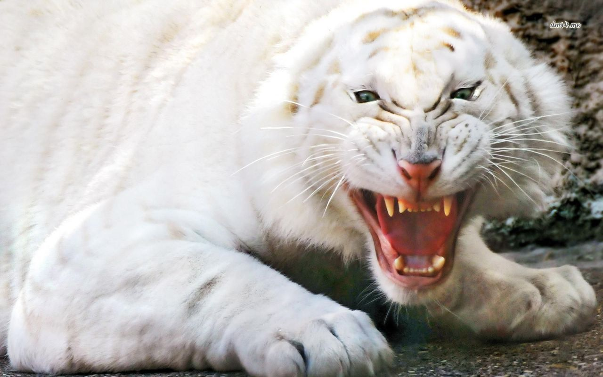- Harimau Albino, dengan mata yang indah dan menakjubkan bagai es biru dan jas putih berbelang, dihitung sebagai salah satu hewan yang paling indah di bumi. Hewan-hewan Albino yang indah juga memiliki hidung merah muda, bibir hitam dan merah muda di bawah-kaki.
- Terpesona oleh keindahan hewan-hewan Albino, banyak dari kita tidak menyadari bahwa harimau putih tidak bisa lagi ditemukan di hutan-hutan karena kebanyakan dari mereka telah diangkut ke Kebun Binatang, dan peternakan. Berbeda asosiasi Big Cat melakukan semua yang mereka bisa untuk mencegah hewan-hewan Albino dari menghilang dari muka bumi. Harimau putih adalah spesies yang mengalami pubertas lebih cepat dibandingkan dengan harimau normal.
Lion Albino
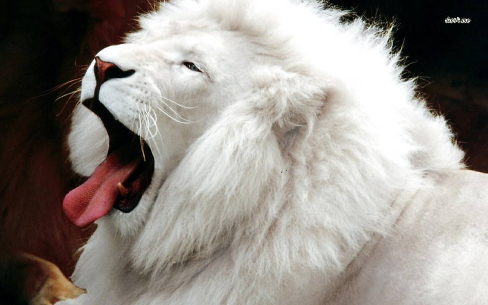- Selama berabad-abad, suku hutan Afrika percaya bahwa jika hutan mereka memiliki singa putih, maka mereka akan diberkati dan tidak ada kekurangan makanan. Menurut para ilmuwan, singa-singa putih kehilangan pigmen warna normal mereka karena Gene inhibitor.
- Populasi singa putih diperkirakan tidak lebih dari 550 ekor di dunia dan sekarang kebanyakan ditemukan di acara utama Kebun Binatang.
Albino Aligator
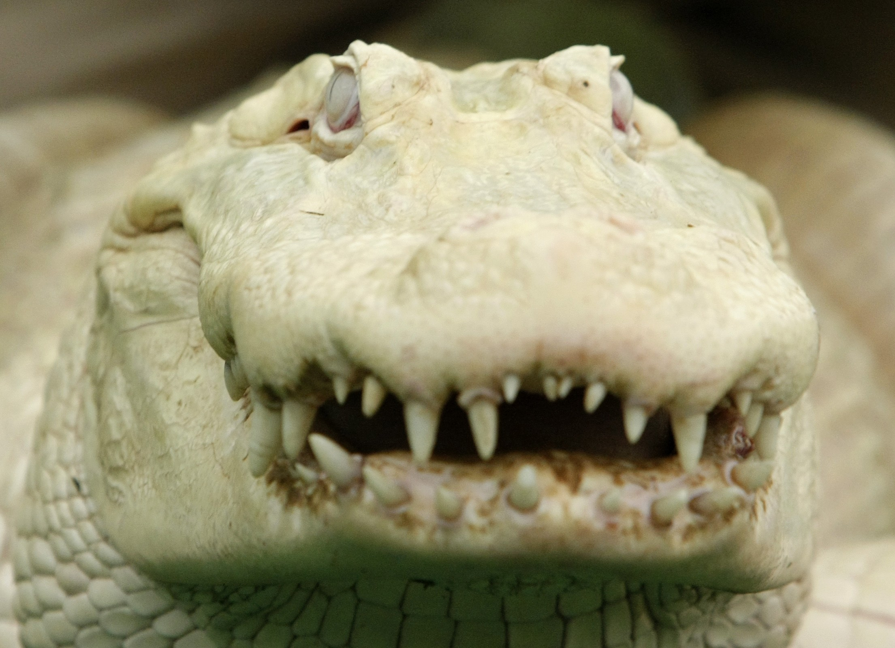- Hanya ada sedikit sekali bahkan dapat dihitung jari jumlah alligator/buaya putih yang ada di dunia. Tapi tidak semuanya benar-benar murni sebagai albino.
- Gambar sebelumnya adalah Bouya Blan, buaya albino berusia 22 tahun yang tinggal di Florida. Hewan albino ini memiliki pigmentasi yang sangat sedikit, bahkan matanyapun nyaris tak berwarna.
Albino Snake
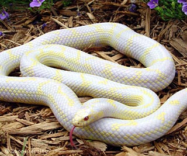- Ular dapat menunjukkan beberapa variasi dari pola abino, dan kulit mereka akan berpola mulai dari warna putih salju hingga warna yang tampak seperti cetakan fotocopy yang kering. Sebagai pemangsa yang bergerak secara diam-diam, ular albino memiliki kerugian dalam dunia hewan buas (dikarenakan warna kulitnya yang terang) dan mereka biasanya tidak dapat bertahan hidup lebih lama. Selanjutnya adalah White Diamond yang lahir di Louisiana namun dibesarkan di Germany’s Serengeti Safari Park. Buaya berusia 15 tahun tersebut merupakan varian buaya Mississppiensis albino satu-satunya di Eropa!
Albino Dolphin
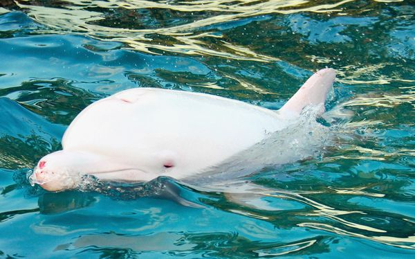- Lumba-lumba di kategorikan sebagai ikan yang paling bersahabat di planet ini, memiliki daya tarik kepada manusia dan dapat di latih di karenakan kepintaran lumba-lumba.
- Lumba-lumba albino hanya terdapat sekitar 140 di dunia, sebagian besar Lumba-lumba albino memiliki ukuran yang lebih besar daripada Lumba-lumba pada normalnya. Memiliki Ukuran 2 - 3,5 Meter dan bahkan bisa tumbuh lebih dari itu.
Albino Whale
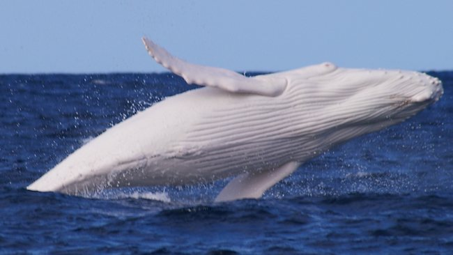- Paus saat ini merupakan makhluk hidup terbesar hadir di planet kita. Ada sekitar 40 spesies paus dan diantara spesies paus besar, ada beberapa paus Albino.
- Paus Albino kebanyakan ditemukan di Arktik atau Sub Arktik Cetacean. Hewan Albino ini tidak dapat hidup di suhu air panas atau moderat dan itulah mengapa mereka kebanyakan ditemukan di dekat daerah Arktik.
Albino Kangaroo
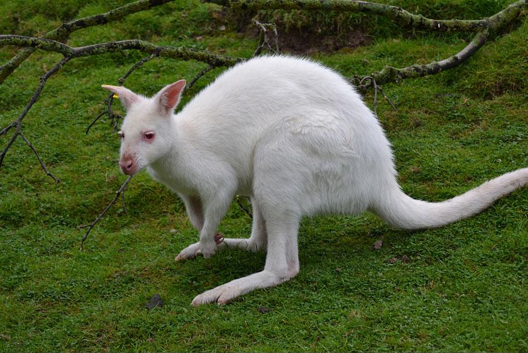- Kanguru adalah binatang nasional Australia dan ditemukan di sebagian besar hutan Australia dan daerah sekitarnya. Kanguru albino hanya ada di Australia dalam jumlah yang sangat kecil.
- Semua kegiatan kanguru albino sama seperti kanguru lain dan satu-satunya hal yang membuat mereka terpisah dan menonjol keluar dari kawanan adalah warna putih mereka. Kanguru ini sedang dibesarkan sehingga jumlah hewan-hewan albino dapat ditingkatkan sampai jumlah yang aman.
Albino Gorilla
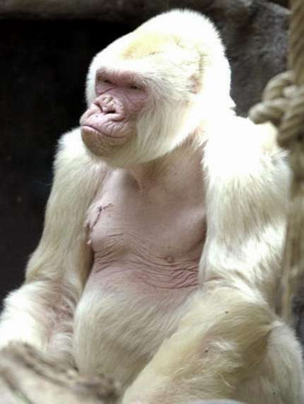- Gorilla albino pada saat ini sangat jarang dijumpai, total jumlah gorila albino yang ditemukan hanya gorilla jantan tunggal. Barcelona Zoo, Catalonia, Spanyol mempunyai gorila albino yang diberi nama Snowflake.
- Jangka hidup dari Snowflake adalah antara 38 sampai 40 tahun yang melebihi jangka hidup dari rata-rata usia gorilla apapun.
Albino Squirrel
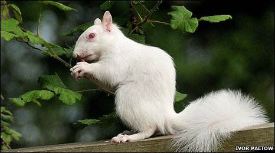- Tupai dapat ditemukan hampir di semua negara di dunia dan dapat dilihat di pohon-pohon. Dalam daftar hewan Albino, Tupai Albino memegang tempat ke-7 karena langka dan keindahannya.
- Hampir semua hewan Albino dianggap indah dan menarik tapi makhluk kecil ini memiliki spesialisasi sendiri. Tupai Albino yang terancam punah karena hanya 220 atau lebih yang tersisa di dunia.
Albino Deer
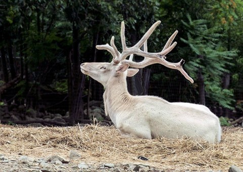- Rusa albino kemungkinan hewan yang paling dekat dengan mitos Unicorn. Beberapa orang juga percaya bahwa hewan-hewan albino memiliki kekuatan magis menghilang di malam hari.
- Sekitar 300 rusa albino yang tersisa di dunia dan kini berada di sebuah kota kecil di negara Carson, Texas, Amerika Serikat. Rusa albino memiliki gen resesif yang membuat warnanya putih cerah.
Tantangan Sosial
Kebanyakan penderita albinisme belajar menyesuaikan diri dengan keterbatasan fisik mereka.
Di beberapa bagian di Afrika Barat, anak-anak albino diejek atau dicemooh dengan ungkapan-ungkapan bersifat rasis. Di beberapa wilayah berbahasa Yoruba, mereka dijuluki ”Afin”, yang artinya ”mengerikan”. Biasanya, orang dewasa tidak diejek sesering anak-anak. Meskipun orang-orang di Afrika Barat pada umumnya menghabiskan waktu di luar rumah, beberapa albino memilih untuk tinggal di dalam rumah. Gampang sekali bagi mereka untuk merasa ditolak dan tidak berguna.
Tak hanya tantangan sosial untuk mereka, ini juga akan menjadi tantangan sosial bagi siapa-siapa saja yang ada di sekitar mereka. Bagaimanapun juga kenyamanan bersama tetap yang terpenting, maka dari itu orang-orang di sekitar harus bisa memperlakukan mereka sepeti orang normal lainnya.
Legenda Albino di indonesia
Desa Mantar Sumbawa – Ingat Film “Serdadu Kumbang” garapan Arie Sihasale yang di rilis th 2011? Di tempat syuting film inilah ada sebuah desa yang terdapat legenda tentang Albino. Hanya ada 7 orang Albino yang bisa hidup di desa ini, ketika albino ke 8 lahir ini merupakan pertanda bahwa ada albino lain yang akan meninggal dunia.
Kenapa ada keturunan Albino di desa Mantar? Menurut legenda ada kapal dagang cina yang awak kapal nya dari bangsa portugis, jerman, kaukasoid, arab, cina dan juga dari Gresik Jawa Timur kapal ini karam dan terdampar di desa Mantar. hanya 7 orang berkulit putih yang di izinkan tinggal di desa mantar. sejak ke 7 orang tersebut meninggal dunia seorang bayi Albino akan lahir untuk menggantikan tempat mereka, jumlahnya selalu 7.
Mitos Albino
Mitos Albino pada Manusia
Menurut kebanyakan orang, salah satu mitos mengatakan bahwa ketika anak tidak mempunyai mata yang berwarna pink, maka mereka tidak akan mengalami albino.Benarkah? Kenyataannya, warna mata anak tidak selalu pink atau kemerah-merahan. Pada beberapa anak albino yang masih memiliki sedikit pigmen di dalam tubunya, kemungkinan akan memiliki mata yang berwarna hijau atau agak sedikit kecoklatan.
Untuk mereka yang tidak memiliki pigmen sama sekali di dalam tubuhnya, akan memiliki mata yang berwarna pink ini. Oleh karena itu, seringkali anak albino akan nampak seperti memiliki warna yang berwarna merah ketika difoto. Ini karena iris mereka tidak bisa memantulkan cahaya dari blits kamera. Ada juga yang mengatakan kalau anak albino memiliki gangguan dengan mental, jangan pernah menggubris pernyataan yang satu ini. Karena kenyataannya, albino sama sekali tidak ada hubungannya dengan mental anak.
Mitos Albino pada Hewan
Albino pada Kucing
Kucing albino menurut sebagaian orang pastilah kucing tuli. Apakah benar demikian? Sebenarnya itu adalah salah satu mitos. Pada kenyataannya kebanyakan kucing yang berwarna albino memang membawa beberapa cacat genetik. Namun tidak semua kucing albino itu tuli, karena 95% kucing albino sebenarnya tidaklah putih total.
Dalam masa pembuahan kucing di dalam rahim, sel tapetum lucidum (mempengaruhi warna mata), sel pigmen (mempengaruhi warna kulit), dan sel selaput telinga berkembang dari sel yang sama. So, ketiga jaringan tersebut (warna mata, warna bulu, dan jaringan pendengaran) memang berkaitan. Maka dari itu, jika salah satu sel, misalnya sel pigmen tidak berkembang dengan baik, kemungkinan besar 2 sel lainnya juga berkembang tidak baik.
Namun, kucing berbulu putih tidak selalu berarti kucing albino. Binatang albino biasanya memiliki mata berwarna pink. Sementara kucing putih tidaklah pasti demikian. Sehingga belum tentu kucing berbulu putih itu punya ketidak normalan pigmen yang berarti jaringan telinganya juga tidak normal. Sel Tapetum yang tidak berkembang dengan baik akan membuat mata kucing berwarna biru. Biasanya yang berwarna mata biru pastilah mempunyai bulu berwarna putih. Dengan demikian kucing ini juga punya khans besar untuk menderita tuli. Terutama yang kedua matanya berwarna biru.
Albino pada Tanaman
Pada tanaman, Albino atau disebut Biki, adalah suatu penyakit yang membuat tanaman itu kehilangan klorofilnya sehingga mereka akan kesulitan untuk berfotosintesis dan menghasilkan makanan, maka dari itu tanaman yang mengalami albino tidak akan bertahan hidup lama.
Albino pada Tanaman Jagung
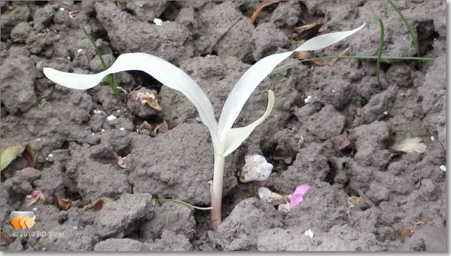Albino pada tnnaman sering kali terjadi pada tanaman jagung, jagung yang berwarna putih tidak layak untuk panen dan dimakan. Bahkan mereka tidak akan bisa bertahan hidup sampai menghasilkan jagung.
RedWood Tree Albino

Albino redwood adalah pohon redwood yang tidak mampu menghasilkan klorofil dan memiliki daun putih. Untuk bertahan hidup akar redwood albino harus bergabung ke akar dari redwood normal, biasanya pohon induk telah tumbuh dimana redwood albino memperoleh gizi sebagai parasit.
Sebagian besar redwood albino ditemukan berada di tanah pribadi. Para ilmuwan telah bekerja sama dengan pemilik lahan untuk menginformasikan kepada mereka tentang bagaimana redwood albino dilindungi. Ketika mengunjungi sebuah cagar alam, redwood albino mendapat perawatan khusus agar membuat pohon tersebut dapat berkembang. Dalam kebanyakan kasus, sampel daun dari redwood albino telah dikumpulkan untuk di analisa lebih lanjut.
Redwood albino dapat ditemukan di Henry Cowell Redwoods State Park dan Humboldt Redwood State Park. Namun, lokasi yang tepat tidak dipublikasikan untuk melindungi pohon-pohon redwood tidak punah. Mereka mencapai ketinggian maksimum sekitar 20 m (66 kaki).
Milkweed Albino
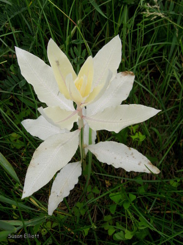Albino Milkweed adalah cluster terdekat dari Milkweed biasa dan memperoleh nutrisi yang dibutuhkan dari hasil fotosintesis induknya. Tanaman ini tidak terlalu umum karena fotosintesis tidak dapat terjadi tanpa klorofil. Umumnya, tanaman albino tidak akan hidup lebih dari seminggu atau lebih. Satu-satunya pengecualian adalah tanaman yang parasit, hidup dari tanaman lain. Milkweed bisa bereproduksi secara seksual, melalui penyerbukan, produksi benih, penyebaran dan dapat bereproduksi secara aseksual melalui rimpang.
Sweetgum albino
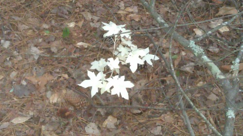Tanaman Sweetgum albino sangat jarang dijumpai, tetapi tanaman ini bukan berarti tanaman yang langka. Albino biasanya berasal dari hasil perubahan genetik untuk tunas yang tumbuh. Untuk alasan apa pun, jaringan pada kuncup berhenti memproduksi klorofil. Daun berkembang tetapi tidak bertahan lama karena tidak dapat menghasilkan makanan sendiri.